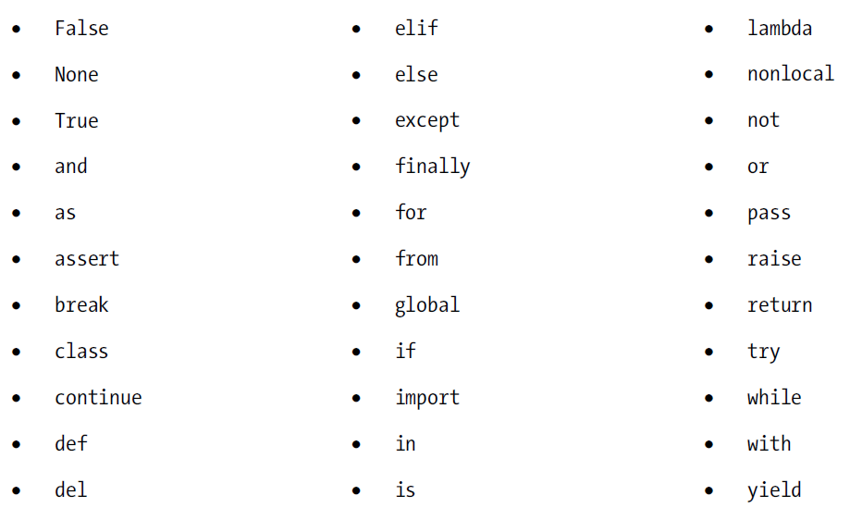

Input and Output, variables and expressions
What you need to write non-trivial code.
Warmup refresher: output your name
Write a program that displays your name in the console
print("Malek Smaoui")
- The “Hello world!” program always outputs the same text
- To print a different text, we need to modify the argument of the print statement
- Modifying the code means obtaining a different program
- Fundamentally, both programs perform the same action only on different data
- More useful programs should solve a generic problem where the problem instance is specified at runtime
Problem vs Problem instance
- Example of a computational problem: “Sorting in increasing order a set of integers”
- Example of an instance of the above problem: “Sorting in increasing order the set {9, 5, 2, 7, 3}”
- When a computational problem has multiple instances, the algorithm requires input
- The input of the algorithm is the problem instance
- The output of the algorithm is the solution of the problem instance
Solving problems with algorithms
- Algorithm : sequence of steps, expressed in a certain language, followed by a processor, to solve a problem
- Processor: not necessarily a computer; can be a human being
- Problem: not necessarily computational; can be making a meal
- Language: not necessarily a programming language; could be natural language
- Steps: not necessarily machine instructions; could be physical actions
- With this definition, a cake recipe is an algorithm
- Some conditions to be verified:
- Processor understands the language
- Steps are within the capabilities of the processor
- Problem is solvable by the processor
Algorithm vs Program
- An algorithm (of a computational problem) can be expressed in multiple ways:
- Using natural language, e.g. English
- Using a chart
- Using pseudocode: mix of natural language and programming constructs
- Using a specific programming language
- A program is one form of an algorithm
- Since an algorithm expects input and produces output, a programming language need to provide constructs to exchange this data with its user.
Standard Input and Output
- Users interacts with programs via an interface
- Console: basic multi-line text display and typing
- Graphic: one or more windows with text, graphics and more.
- Programming languages provide constructs to:
- Acquire or get text from the Console: input
- Display or print text to the Console: output
- The “Hello world” program illustrates basic text output via the
printstatement - Obtaining text typed by the user on the console is achieved by the
inputfunction printandinputare functions, part of the Python Standard Library- Other forms and means of I/O require other constructs from the Python Standard Library (like files, discussed later) or even different libraries
Greetings
user = input("What is your name?")
print("Hello", user, ", nice to meet you.")
input: function which- prints the text argument AKA prompt
- acquires (and returns) whatever text the user will type to the console
user: object (AKA variable) that will receive and store the user input.- Simplest program with
- input and output
- problem instance and solution
Objects or variables
- User input, program output and intermediary data used to solve a problem need to be stored in memory to be accessed and used as needed
- A program needs to designate a memory container to store a specific piece of data
- A program uses aliases or names to designate specific pieces of data
- The interpreter (and the Operating System) maps these aliases to actual addresses (locations) in the memory hardware, where the data is written (stored)
- An object (variable) is a programming abstraction used to represent (name) a memory location where some specific data is stored
- It has:
- An identifier
- A value
- A type; inferred from the initial value assigned to it
- E.g.: the statement
x = 10initializes an object with identifierxto the value10, so its type will be integer
Types
- The basic built-in types are:
intfor integerfloatfor floating point which is an approximation of real numbersstrfor string which is a sequence of characters (text)boolfor Boolean
- Other compound / advanced data types will be discussed later
Initializing and printing variables
- Create a string, an integer, a Boolean and a floating point number objects.
- The string should be named
sampleStringand should contain the word"hello". - The floating point number should be named
sampleFloatand should contain the number10.5 - The Boolean should be named
sampleBooleanand should contain the valueTrue. - The integer should be named
sampleIntand should contain the number20.
- The string should be named
- Write the necessary output statements to obtain the following output.
sampleString = hello
sampleInt = 20
sampleFloat = 10.5
sampleBoolean = True
Make sure that if you change the initial value of a variable, the displayed value changes automatically, without editing the corresponding output statement
sampleString = "Hello"
sampleInt = 25
sampleFloat = 10.5
sampleBool = False
print("sampleString =", sampleString)
print("sampleInt =", sampleInt)
print(sampleFloat)
print(sampleBool)
printfunction can take variables as arguments and outputs the value of the variableprintfunction can take multiple comma-separated arguments:- Arguments can be literal text, variables, expressions, etc.
- By default, consecutive arguments are separated by a single space (see customization later)
- By default, every print statement outputs its arguments to a new line (see customization later)
Choosing identifiers
- Naming identifiers sensibly makes code more readable and easily understandable
- Sensible identifiers are those describing the concepts their objects represent
- Multi-word identifiers can be used separated with underscores or inter-capitalization
- First character can only be a letter or the underscore
- Identifiers are case sensitive
- Avoid keywords or reserved words

Objects and their references
- With an assignment statement, an object identifier is mapped to a memory address, AKA reference, where the value of the right-hand-side of the statement is stored
- A subsequent assignment is a different identifier-to-reference mapping i.e. a reference to a different memory location where the new value is stored
- The memory location no longer mapped to the identifier is reclaimed by the garbage collector to be used for other objects (subsequent mappings)
- This is why a variable (object) can change types during the execution of a program
x = 10
print(type(x))
x = "hello"
print(type(x))